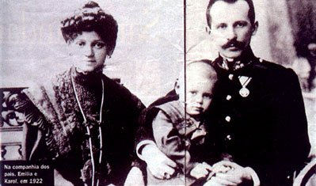
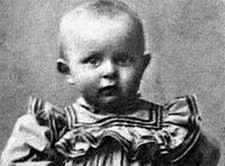
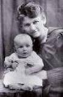
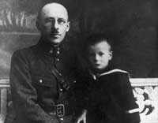
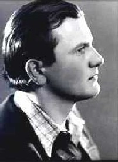
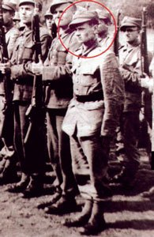
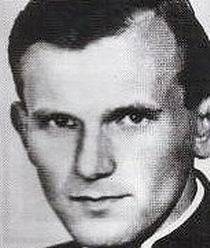
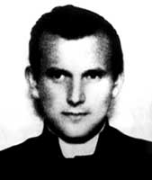
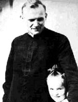

"NASCIMENTO, JUVENTUDE, SACERDÓCIO"
Karol Józef Wojtyla nasceu em
Wadowice, um pequeno lugarejo ao sul da Polônia, 
Era uma família alegre, unida e harmoniosa, dedicada ao trabalho e a oração, cultivando em plenitude uma sadia vivência cristã. Não só no final de semana seus pais tinham o hábito de rezar e de participar da Santa Missa. Nos dias de trabalho, a noite, reunidos no lar, liam trechos da Sagrada Escritura e rezavam elevando o pensamento a DEUS, agradecendo por todos os favores e acontecimentos do dia.

Karol Wojtyla sempre apreciou os esportes.
Gostava de esquiar na neve e também de 
Também tinha uma preferência toda especial pelo circo. Gostava e se divertia com os trapezistas e dava boas gargalhadas com as tramas e atrapalhadas dos palhaços. Sempre que acampava um circo nas redondezas de Wadowice, seu pai prazerosamente o levava para se divertir em cada sessão.
E talvez por esse motivo ou como consequência, o futuro Pontífice também revelou grande interesse pelo teatro e pelas artes literárias polonesas. Desde o tempo em que frequentava o colégio pensava seriamente na possibilidade de continuar os estudos de filologia e linguística, com a intenção de organizar uma equipe e fazer apresentações teatrais.
Em 1938 matriculou-se na
Faculdade de Letras da Universidade Jagellon de Cracóvia, objetivando
concretizar o seu ideal. Na sequência dos meses, um encontro com o
Cardeal Sapieha que realizava uma visita pastoral a Wadowice, lhe despertou o
desejo de considerar seriamente uma outra possibilidade, aquela de seguir a
vocação religiosa. O seu comportamento e sua maneira pessoal de viver
revelavam de modo transparente, que já estava impressa 
Ao eclodir a Segunda Grande Guerra Mundial, as tropas nazistas invadiram a Polônia e se apoderaram de todos os bens, dos materiais e da cultura do país, impondo normas e padrões para o viver cotidiano. Foi uma época difícil e de muito sofrimento para o povo, que ficou amordaçado e sem ação, a mercê do poderio e da força dos nazistas, que impunham com crueldade um abominável regime de escravidão.

Wojtyla presenciou ao assassinato de vários dos seus amigos e colegas, de maneira violenta e covarde. Diante desta situação Karol com um grupo de jovens organizaram uma Universidade clandestina, aonde estudou filosofia, idiomas e literatura. Foi também uma oportunidade para estreitar o seu relacionamento de amizade com a comunidade judaica, que era perseguida e dizimada pelos alemães, que prendiam todos os judeus, homens e mulheres, velhos e crianças, e enviavam para os campos de concentração e de extermínio, principalmente aquele de Auschwitz, realizando um maciço e cruel massacre de vidas humanas de forma deliberada, num impressionante e terrível holocausto. Através da organização clandestina, Karol e seus companheiros, criaram meios e potenciava uma resistência polaca contra os alemães, conseguindo esconder muita gente, preservando muitas vidas que estavam condenadas pela loucura nazista.
Antes de
decidir o seu ingresso ao seminário, o jovem Karol teve que trabalhar arduamente
como operário numa pedreira. Segundo relato do próprio Pontífice foi uma
experiência que o ajudou a conhecer de perto o cansaço físico, assim como a
simplicidade, a sensatez e o ardor religioso dos trabalhadores e dos pobres.
Depois, também trabalhou como operário na fábrica de produtos químicos Solvay
objetivando evitar a sua deportação para Berlim. Certo dia ao retornar da Solvay,
foi atropelado por um caminhão nazista. Teve graves ferimentos no crânio e
sofreu comoção cerebral. Na época, a expectativa não era encorajadora. Mas, um
mês depois, saiu 
Muito religioso e cultivando uma poderosa devoção toda especial a MÃE DE DEUS, junto com alguns colegas fundou uma Congregação Mariana em seu Colégio, onde na companhia dos mesmos e de outros que vieram, rezavam, cantavam e também participavam das Celebrações Eucarísticas.
Embora mantivesse o ardor e a força de sua esperança, Karol estava cercado por uma série de dificuldades e no meio delas, sofreu outro vigoroso golpe em 1941. Um pouco antes de completar 22 anos de idade perdeu o seu pai, que além de ser um homem admirável, era um progenitor que estimulava o ideal do filho e contribuía para a liberdade de sua pátria.
Em 1942 ingressou no Departamento de Teologia da Universidade Jagieloniana de Cracóvia e depois na Universidade Católica de Lublin. Por esse motivo, teve que viver escondido, junto com outros seminaristas, que foram acolhidos pelo Cardeal de Cracóvia. A tal ponto a perseguição alemã era terrível, que em 1944 vivia na clandestinidade no Palácio Episcopal.
É fácil imaginar a grandeza da loucura alemã que causou imensa quantidade de crimes a toda humanidade, e em particular, ao povo judeu, na Polônia e em todos os países ocupados pelos soldados nazistas. Foi um tempo de muito sofrimento e privações.

Com o fim do conflito militar em 1945, reuniram-se em Ialta na Ucrânia, Winston Churchill (Premier do Reino Unido), Franklin Delano Roosevelt (Presidente dos Estados Unidos da América do Norte) e Josef Stalin (Presidente Governante da Rússia, a União das Repúblicas Socialistas Soviéticas) e decidiram sobre a partilha dos países envolvidos na guerra, ocasião em que coube a União Soviética o predomínio sobre a Europa Oriental, incorporando os territórios alemães a leste, também a Polônia, alcançando a Bulgária, Iugoslávia, Tchecoslováquia, etc., metade do Vietnam, da Coréia, etc., definindo assim as áreas de influência soviética e norte-americana, no mundo.
E desse modo, independentemente da vontade
do povo, a Polônia emergiu de uma 
Apesar das dificuldades e restrições impostas pelos mandatários comunistas poloneses, pouco tempo após a sua ordenação foi para a Itália, onde permaneceu de 1946 a 1948 para cursar os estudos superiores a fim de completar a sua formação teológica. Obteve a licenciatura de Teologia na Universidade Pontifícia (Angelicum) de Roma, e na sequência, voltou a Polônia e defendeu a sua tese de doutorado sobre a fé segundo São João da Cruz, se doutorando em Filosofia.
Sua primeira paróquia foi em Niegowiec, na diocese de Tarnow, ao leste de Cracóvia, uma aldeia com apenas 200 habitantes que não dispunha sequer de eletricidade, onde permaneceu cerca de sete meses, entre 1948 e 1949. A seguir, até o ano de 1951, Wojtyla foi vigário em várias paróquias na Polônia e foi com muita coragem e perseverança que pregava abertamente a liberdade do homem e o direito que cada pessoa tem ao exercício de qualquer atividade religiosa. Este procedimento causou um profundo atrito com as autoridades comunistas, que insistiam em proibir as suas homilias. O fato repercutiu em todos os setores da economia daquelas regiões, que em represália, ameaçaram entrar em greve. Esta realidade forçou um recuo imediato nas imposições dos chefes do regime, que decidiram assinar em 14 de Abril de 1950 um acordo com Karol, para colocar um fim naquele problema.

Apesar da proibição do governo comunista polaco que não permitia nenhuma nomeação no magistério, na cultura e na Igreja, em 9 de Novembro de 1953, Karol é nomeado professor de Teologia Moral e de Ética Social na Faculdade de Teologia da Universidade Estatal (Jagieloniana) de Cracóvia. Em 1954, o regime comunista fechou a referida Faculdade de Teologia.
Em 1956, Karol Wojtyla fundou o Instituto de Teologia Moral na Universidade Católica de Lublin, onde ocupou a cátedra de Teologia e Ética. Teve a oportunidade de interagir com importantes representantes do pensamento católico polonês, especialmente com aqueles da vertente conhecida como "tomismo lublinense”.